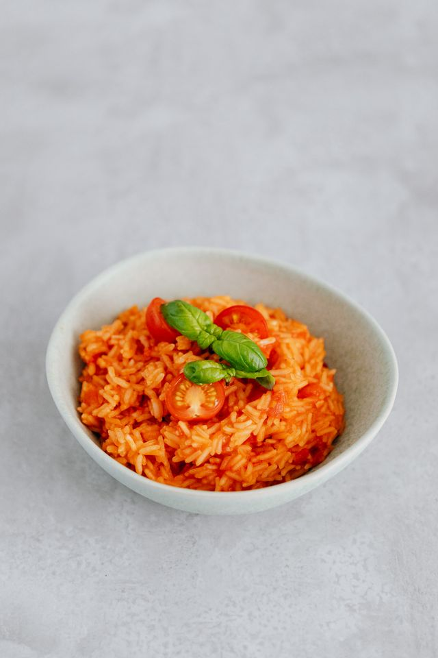

O Arroz de Tomate é um prato tradicional da culinária portuguesa, feito com arroz cozido em um molho de tomate temperado com alho, cebola e ervas aromáticas.
É um acompanhamento versátil que combina bem com diversos pratos de carne, peixe ou legumes. É um prato encontrado mais comumente na casa dos portugueses, principalmente em refeições casuais, devido ao facto da difícil conservação no tacho por longo período de tempo, prática comum nos restaurantes.